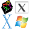
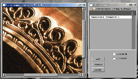
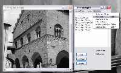

Theming[ Introduction | State | Thematic | Downloads | Related links ]
Introduction
Themes are constituted by run-time loadable bundles which change or customize the appearance of the graphical interface.
Themes can be set for all application or also each application can loads its own theme, allowing for a high level of adaptability.
Many interface element styles can be customized in GNUstep. The standard interface has a feel which follows that of NeXT and which feels different than that of most graphical environments which essentially follow the CUA style (Windows-Motif/CDE-OS/2). GNUstep is capable of changing the behaviour of several controls and elements . We encourage you to try out the default style: it needs some time to adapt to when coming from a different system, but it is very functional. However, when there is need to integrate a GNUstep application in a foreign environment, it can be desired to make it blend best. Slowly other environments acquired some of the NeXT prerogatives, blurring the differences. These interface parameters can be set simply by writing defaults, but a theme bundle can conveniently set them together.
Menu Style: NeXT-style (floating-detachable and vertical), Macintosh-style (persistent, top of the screen), Windows-style (in-window)
Scrolling arrows: NeXT-style (paired, at the bottom), Windows-style (one at each end)
Scroll bar: at the right (NeXT style) or at right.
Windows decorations: drawn by the host system (typically the X11 window manager) or by GNUstep itself (allowing to theme them)
Pixmap Themes
GNUstep's gui is created in many details with images, by changing those
the aspect will change. Most colors of the interface are customizable
too.Code-based Themes
The Theme Engine can be overridden in key places to radically change the drawing of a control, allowing thus a deeper control in the user interface drawing.It must be added that drawing in GNUstep is done following the Class Hierarchy, thus a the button of a scroll bar extends the standard NSButton and inherits its drawing methods.
Code-based themes can of course leverage all the customization doable by changing images and customizing colors, thus only certain key methods may be needed to be overridden to achieve the desired effect
Code-based Themes are those which allow the creation of native themes like the Windows WinUXTheme or the GTK theme. More are certainly possible.


The Windows classic theme:
This theme contains no code and only sets defaults and images. The in-window menus are generated GNUstep, the scrollbar have separated arrows and are placed on the right. Buttons and controls are styled through images. The theme is still under development.

The Windows theme:
This theme contains all possible customizations: defaults, colors, images and code. The code allows the native drawing of many controls. The native Windows (WinUXTheme) theme running on Windows XP: it shows the native in-window menus, the correctly themed and natively-drawn buttons as well as the native scrollbars. The window decorations are native too. The theme is still under development.State
Theming support in GNUstep-gui is pretty advanced, however the
native themes and Thematic are still under development.
The Native themes may support some controls but do not behave well
generaly with every application. It is best to test how well your
application fares, changes are it may work very well already.
Thematic
Thematic helps the creation of themes by easily managing its resources, properties and by allowing code to be inserted in the correct places.
Thematic can support editors for managing the theming of specific controls easily.
Downloads
There has been no official Thematic release yet.
There have not been any officially releases of the themes.
Related Links
GNUstep Application Project page on theming.